Rules from Lague, MCPM, Primordia, Jones and Adamatzky, and Reginato 2024, built on the CPU big dish as sandbox options, all off by default. As you asked at 04:11, each is judged by whether it makes a creature for play, not a new pattern. Paired tests use 8 seeds; a result of 8 of 8 is p 0.008 and survives a correction for the 5 tests.
Two species hold two territories with a clean border. Avoiding the other species cleans the border (8 of 8); following your own trail is what keeps you home.
Explorers that turn into tube builders one by one grow radial, feathery veins from a disc. This is the first rule here that draws something like Jenson's fronts.
Packed walkers that lay trail where they stand pull together into about 180 small round bodies, or a network with a blob at each junction. They don't move yet.
Three species chasing each other braid into ribbons that keep flowing. They mix rather than separate.
The chance turn gives more loops (8 of 8), area sensors give fewer (8 of 8) at 1.5× the cost, and size spread gives trunks with capillaries on one seed (its measure failed, 6 of 8 the wrong way). They go in the sandbox and get no more tests.
Jones and Adamatzky's crawling blob: on our dish the walkers spread out in 2 s instead of crawling.
Each species lays and smells its own trail field. It reads its own trail × (1 + a), minus all trail × a; a is species_avoid. With species_zones each species starts in its own band of the dish. 1,000,000 walkers.
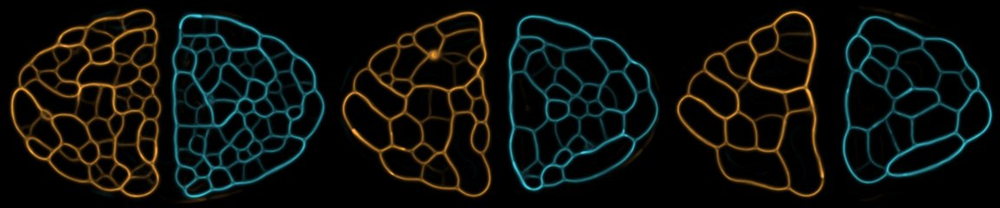
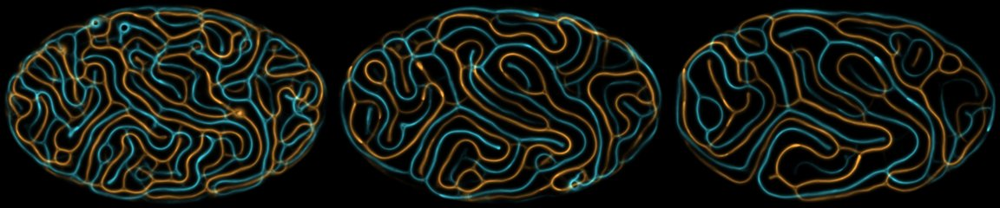
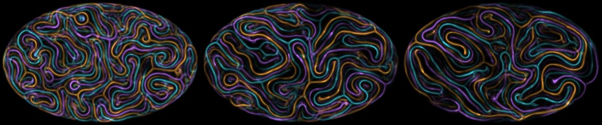
Primordia's preset: a walker reads its own trail +1, the next species +0.6 and the previous −1 (species_cycle). Sensors 20° and 32 cells out, turn 20°, step 2.
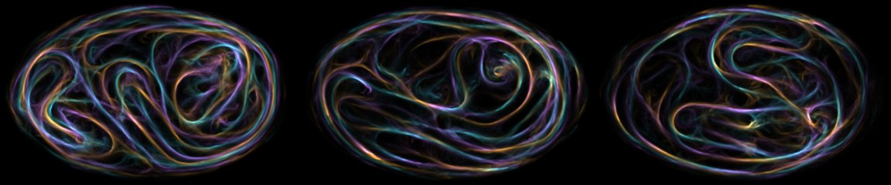
From Reginato 2024: a walker younger than explore_steps steers toward the lowest trail and lays 5% of the deposit, then becomes an ordinary walker. With explore_spread each walker's explorer stage lasts 0 to 2 times that, so walkers switch one by one. 1,000,000 walkers from a disc of radius 20. Seed 1.
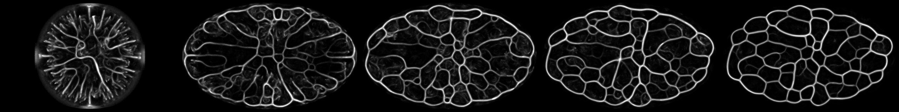
One walker a cell, sensors 90° apart, turn 45°, deposit 5, trail keep 0.93, 30,000 walkers. Normally only a walker that moves lays trail. With blocked_deposit 1, a walker that can't move lays its deposit where it stands, so a crowd smells of itself and holds together. Seed 1, walker counts shown.
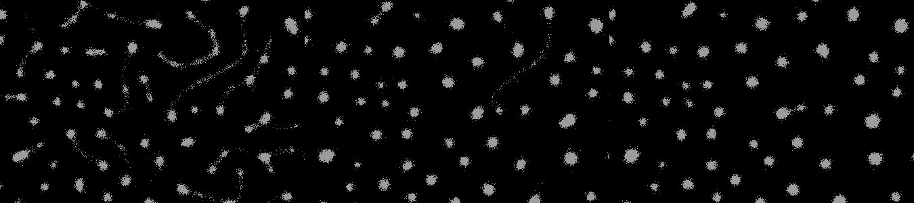
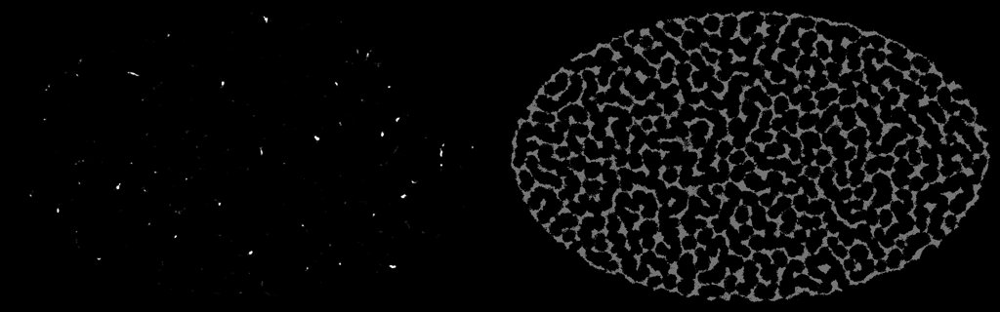
blocked_keep), with retry rounds into cells emptied that step (blocked_retry). The walkers spread over the dish within 2 s (right, counts at 3 s) and the trail breaks into specks (left, 10 s): 92-94% of walkers end up off any tube. A jammed core lays no trail, so the moving edge draws the crowd out.On the plain Jones dish (1,000,000 walkers, sensors 45° and 18 cells out, turn 22.5°), each row at 2, 5 and 10 s. These are in the sandbox and get no more tests: what they do is already well known from their sources.
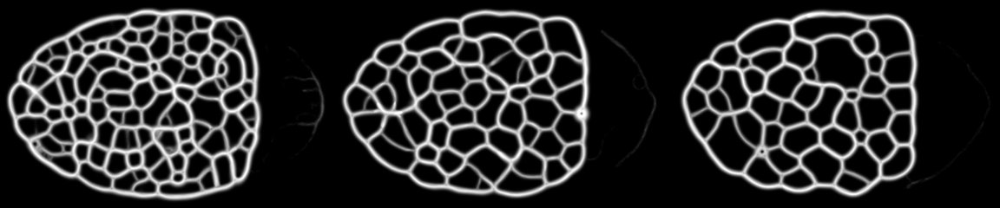
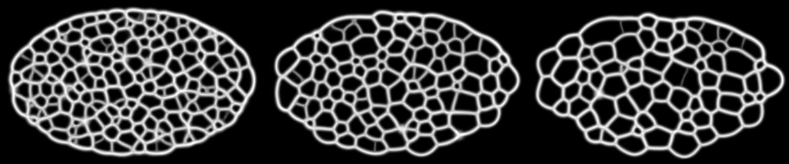
chance_exp 4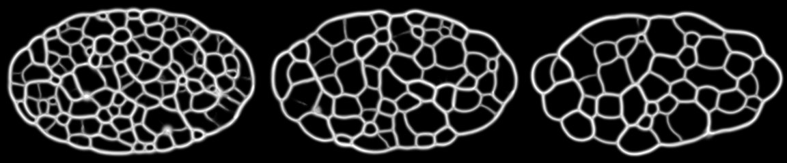
sensor_r 1 (3 × 3)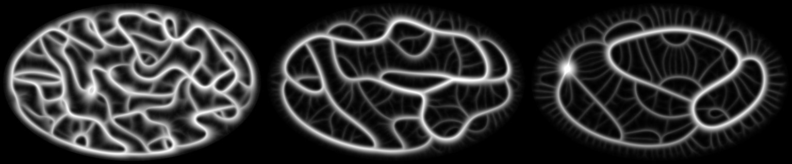
size_spread 0.6Each walker's reach and step are scaled by 2^(0.6 × u), u fixed per walker. Thick trunks with fine side capillaries on this seed, but the measure named beforehand did not confirm brighter trunks. Respawn 0.002, turn 45°, sensors 12 out, step 1.2, keep 0.97.| Test | Deciding measure | With | Without | Paired | p |
|---|---|---|---|---|---|
| Chance turn, e 4 | loops at 10 s | 66.5 | 44 | more 8/8 | 0.008 |
| Area sensors, r 1 | loops at 10 s | 38 | 43.5 | fewer 8/8 | 0.008 |
| Two species in halves, avoid 1 v 0 | species 0's trail in its half, 20 s | 0.99 | 0.98 | more 5/8 | 0.73 |
| Cyclic v plain, 3 species | tube cells changing lead in 2 s | 0.68 | 0.80 | lower 8/8, wrong way | 0.008 |
| Size spread 0.6 | contrast at 10 s | 123.6 | 134.5 | lower 6/8 | 0.29 |
Medians over 8 seeds. Costs come from machines running 4 jobs at once, so read them only as relative. The droplet, bead and explorer results are from one seed each and are not tested. Report: Reports/outside-rules-2026-11-11.md. The survey of 14 more open-source simulations is in code-survey.md beside it.